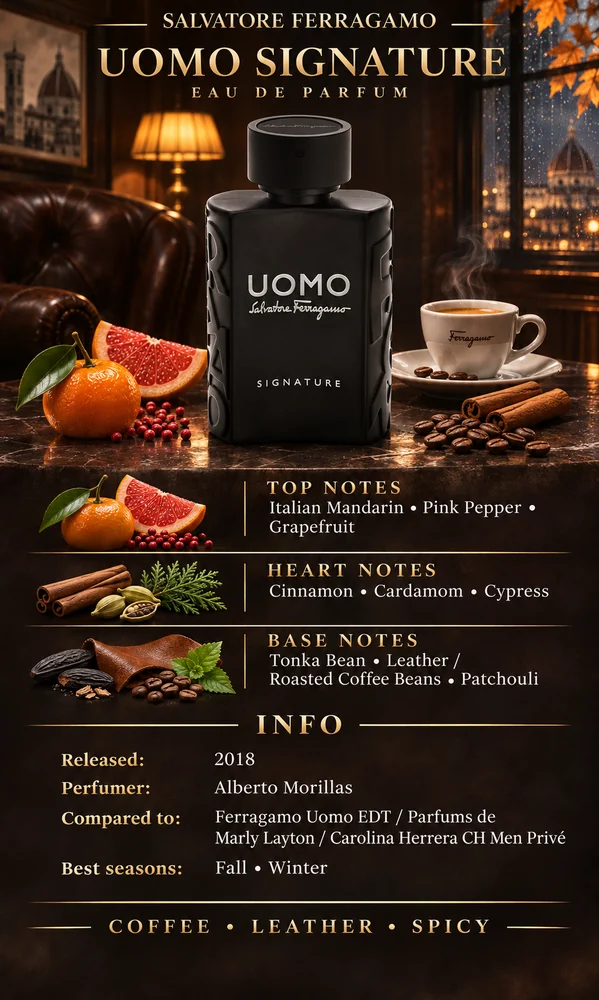
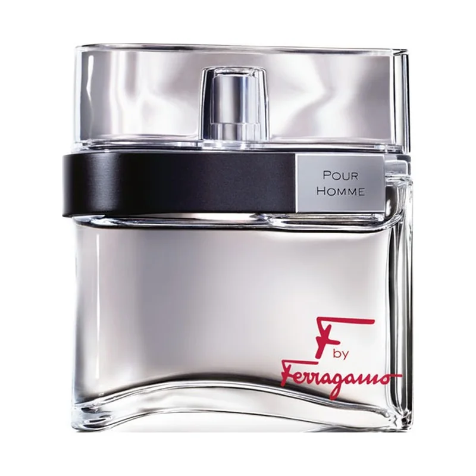

Salvatore Ferragamo
Uomo Signature Eau de Parfum
β Beta Designer · Eau de Parfum · 2018 In collection
Randy's rating7.5/10
Public rating8/10
Overall R19.35/25
Normalized N0.774
R = 7.5 × 1.3 + 8 × 1.2 = 19.35 of 25 · N = 19.35 ÷ 25 = 0.774 How scores work
Notes
Top notes
- Italian mandarin
- pink pepper
- grapefruit
Heart notes
- cinnamon
- cardamom
- cypress
Base notes
- tonka bean
- leather
- roasted coffee beans
- patchouli
Details
| House | Salvatore Ferragamo |
|---|---|
| Type | Designer · β Beta |
| Concentration | Eau de Parfum |
| Released | 2018 |
| Perfumer | Alberto Morillas |
| Scent family | Spicy, Sweet & Gourmand, Citrus |
| Best seasons | Fall, Winter |
| Similar to | Salvatore Ferragamo Uomo EDT Parfums de Marly Layton CH Men Privé |
Sources
Fragrantica 4.28/5 (about 8.6/10) from 3,195 votes; Parfumo 7.7/10 from 411 ratings. Coffee-leather tonka gourmand; rounded to 8. Checked 2026-11-06.
Other Suggestions
-
 Salvatore FerragamoAcqua Essenziale Blu Eau de ToiletteRandy8.25Public 8N 0.813
Salvatore FerragamoAcqua Essenziale Blu Eau de ToiletteRandy8.25Public 8N 0.813 -

Salvatore FerragamoF by Ferragamo Pour Homme Eau de ToiletteRandy6.5Public 8N 0.722 -
 DiorSauvage Eau de ParfumRandy9Public 8N 0.852
DiorSauvage Eau de ParfumRandy9Public 8N 0.852 -
 Viktor & RolfSpicebomb ExtremeRandy8.75Public 9N 0.887
Viktor & RolfSpicebomb ExtremeRandy8.75Public 9N 0.887 -
 Jean RishAzul Pour Homme Eau de ToiletteRandy5Public —N —
Jean RishAzul Pour Homme Eau de ToiletteRandy5Public —N —